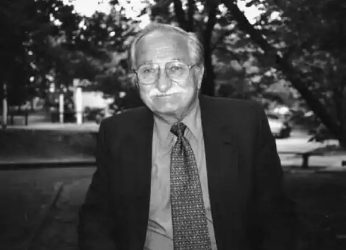

4 червня 1931 року в м. Луцьк народився Богдан Петрович Певний. Художник, письменник, журналіст, мистецтвознавець. Мати Зінаїда Никифорна Миць, батько Петро Герасимович Певний. Хресними батьками Богдана були Ніна Машкевич Певна. Охрещений у Хресто-Воздвиженській автокефальній церкві Пашковським.
1931 — 1935 — Батько Петро Певний, професійний журналіст, перебуваючи на посаді Голови Волинського українського об’єднання у водночас виконує функції радника Рільничої палати на Волині, був головою Товариства імені Лесі Українки, почесним головою Робітничого об’єднання праці в Луцьку, головою клюбу "Рідна Хата", членом ревізійної комісії Товариства імені митрополита Петра Могили. 1939 — 1936 роках був послом до Польського сейму.
Дядько Богдана, Микола Герасимович Певний (1985 — 1940) — актор, засновник Українського Волинського театру. У 1940 році його КГБ розстріляло в Биківні. Дружина дядька Миколи — Антоніна (Ніна) Миколаївна Певна (Машкевич) — артистка Волинського українського театру у 1941 вислана до Сибіру де і померла 1982 р. 1939 — помирає мама Богданом заопікувалися материні батьки – бабуня Дарія Людвиківна та дідусь Никифор Максимович Миці. Дядько Юрій Миць дає перші уроки малювання малому Бобові. 1942 — на прохання батька з допомогою Владики Мстислава Скрипника переїхав до батька у Варшаву. 1943 — батька Богдана, Петра Герасимовича Певного арештує Ґестапо. Богданом заопікувалися владика Полікарп та хресний батько проф. Іван Власовський та члени УНР, з якими він виїздить до Ваймар в Німеччині. 1945 — Богдан виїздить до Української ґімназії в таборі переселенчих осіб в Ульмі, де живе в бурсі, стає членом Української молодечої організації "Пласт", бере участь в виховних таборах, мандрівках та з’їздах. 1947 — переїздить до укрїнської школи в таборі в Ділінґені, Німеччині, де закінчує середню освіту. 1948 — познайомився на пластовому таборі в Німеччині з Христиною Дмитрівною Квасницею, а одружилися в 1960 році в Америці. 1959 — почав студії журналістики у Гохшуле фюр Політіше Вісеншафтен при Людвік Максиміліян Університеті у Мюнхені. 1951 — Богдан з батьком еміґрували до США і поселилися в Нью Йорку. Мистецьку освіту Богдан отримав у Скул оф Віжуал Артс (School of Visual Arts), Нешенал Академі оф Дізайн (National Academy of Design) і Арт Стюдентс Ліґ (Art Student League) в Нью Йорку та в Колюмбіуському і Нью Йорському Університетах. 1955 — перший голова Товариства молодих образотворчих митців Нью-Йорка, заступником голови об'єднання митців-українців в Америці. — займався графікою, ілюструванням книжок і журналів, написав більше сотні есе, статей і розвідок, видав монографію "Микола Неділко", упорядкував книгу екслібрисів "шістдесятників". — дійсний член Української Вільної Академії Наук (УВАН) у Нью-Йорку. 1988 — влаштував виставку "Сучасне мистецтво України" в Нью-Йорк. 1991 — член національної спілки художників України. 1992 — відвідав Луцьк. 2003 7 вересня — Богдан Певний помер, похований в Нью-Йорку. 9 груд. 2013 р. — Колодяжненський літературно-меморіальний музей Лесі Українки одержав 22 експонати від родини Богдана Петровича Певного